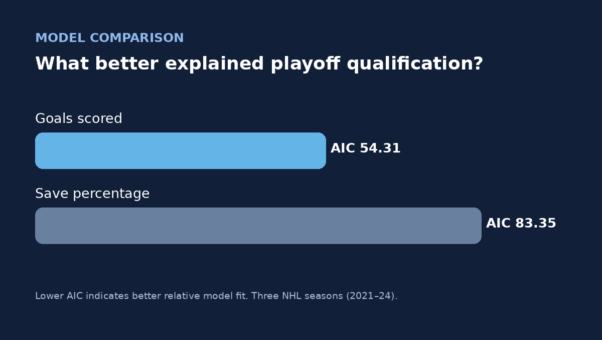
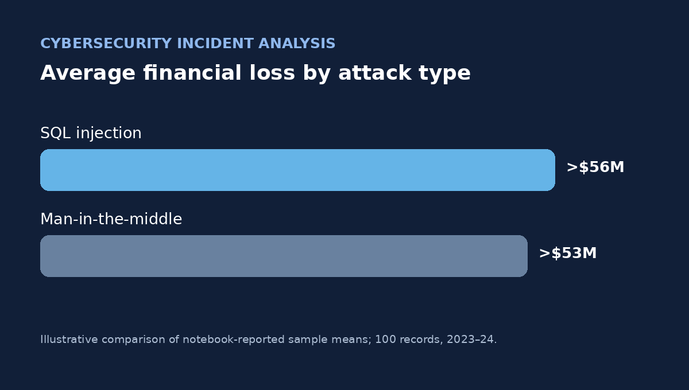

Market intelligence
Cybersecurity M&A Mini Almanac
Cybersecurity M&A and capital markets research supporting professional investment banking reporting.
Explore case study →A closer look at the business questions, technical methods, challenges, artifacts, and implications behind my work.
Cybersecurity M&A and capital markets research supporting professional investment banking reporting.
Explore case study →
R-based modeling of goalie save percentage and goals scored as predictors of NHL playoff qualification.
Explore case study →
Incident-level exploration of cyberattack losses, defense mechanisms, and response times.
Explore case study →I start with a clear question, inspect the underlying data, choose methods that fit the evidence, and distinguish compelling patterns from conclusions that the data cannot support. Each case study includes limitations and next steps—not just positive results.